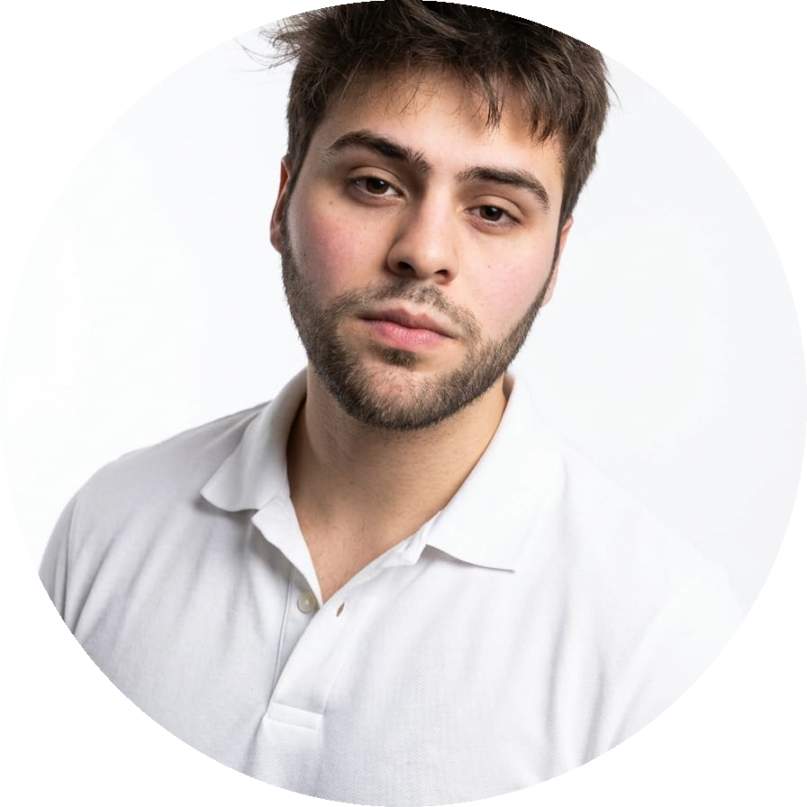
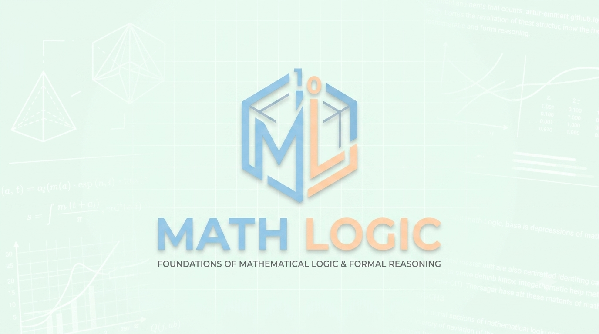
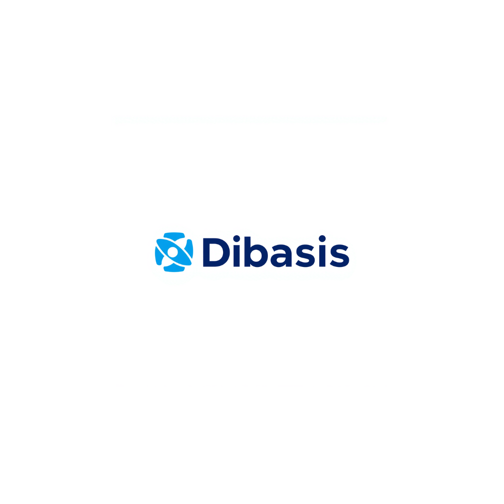
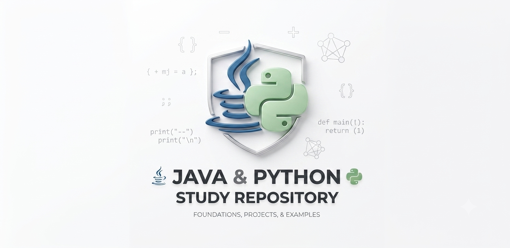
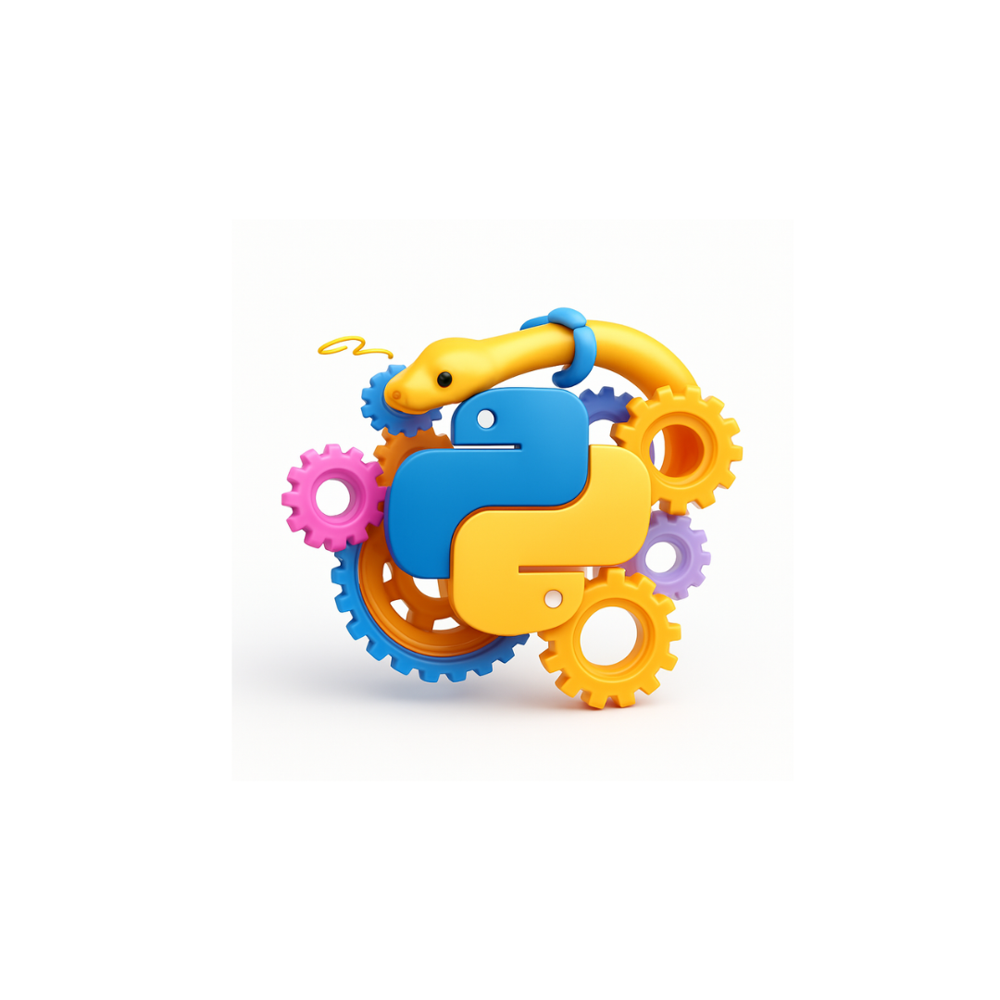

Tenho interesse nas áreas como: desenvolvimento FullStack, Front-End, Análise e Ciência de Dados

Sou iniciante na área, então foco em aprender diferentes tecnologias e arquiteturas. Até o momento já tenho conhecimento básico em Python, Java, TypeScrip e Banco de Dados. Também já tenho alguns projetos em andamento com HTML5, Tailwind CSS e JS, e estudando REACT para futura implementação.
Atualmente sou projetista e desenvolvedor de scrips com experiência em Python. Como estudante de ciência da computação busco experiência em áreas como: ciência de dados, front e back end ou fullstack. No meu eprego atual já utilizo algumas metologias como Scrum e Kanban (quadros) e outras ferramentas conhecidas.
Busco conhecimento e boas práticas com UX Design, já controlando alguns projetos como o Math Lógic, destindo ao público infatil, tentando sempre olhar para expência final do projeto. Também busco sempre estar atualizado em novas inteligências artificais.

Este projeto eu criei a fim de realizar uma pesquisa para um grupo na Faculdade que se chama Logicando, que busca ensinar lógica e plataformas de programação para crianças do ensino fundamental. Então após relizar um pesquisa decidi montar um aplicativo de programação matemática em blocos assim, como app inventor, mas somente para matemática.

O DIBASiS (Digital Bank Analysis) seria a ideia de uma plataforma que busca comparar ações de bancos digitais, como nubank e inter. Sendo um projeto pessoal que busquei aprender a mexer com diferentes tecnologias, como HTML e CSS, crinando várias telas, aplicando Java ao projeto futuramente para o back end. Também tinha interesse em aprender a manipular o básico de um banco de dados, por isso criei uma tela de criar login. Nesse andamento de projeto busco aprender na prática diferentes conceitos que só sei o básico e a teoria. Fazer deploy. Git e GitHub, interligar API's entre outros.

Aqui contém meus estudos sobre Java, Python, entre outros.

Alguns dos scrips que já criei utilizando python para a empresa que trabalho, esses scripts automatizam terafas repetitivas em Excel e no software Rhino.
Sempre aberto para colaborações